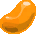
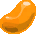

Pet Details
Pets have four main details to them - their Rarity, Attribute, Personality, and Pet Plus Stats, which all contribute to your pet's overall power level.
Your pet's rarity determines its level cap.
| Rarity | Level Cap |
|---|---|
| 6★ | 60 |
| 7★ | 65 |
| 8★ | 70 |
| 9★ | 75 |
| 10★ | 85 |
| 11★ | 90 |
| 12★ | 110 |
| 13★ | 120 |
| 14★ | 130 |
Obtaining Eggs
Eggs up to 9★ can be found through the player shop to give you a decent starting point.
13★ eggs of all pets (except for Rappy) can then easily be obtained through Pudding's Collection Files.

Leveling Your Pets
Unlike your character, your pets do not gain any EXP in combat. Instead, they gain EXP by being fed Eggs, with higher
rarity eggs providing more EXP.
The easiest way to get high rarity eggs to feed your pet is by speaking to Ariel, selecting Pet Goods Shop
and exchanging Photon Spheres for 12★ EXP Eggs.
Attribute
Your pet's attribute denotes what enemies your pet will be stronger against. As mentioned in the skill tree section, most enemies in this game are weak to Light so it's advised that you set your pets to Light to take full advantage of Pet Element Weak Hit as often as possible.Personality
Your pet's personality functions much like a weapon's potential, providing your pet increased damage, reduced PP costs, or other bonuses. With the exception of Rappy, each pet has two unique personalities to choose from. The preferred personality for each pet can be found in the Pets section.Setting Up Your Pet's Attribute & Personality
To make sure your pets are Light right out the gate, simply search the Player Shop for a Light version of the pet. When looking through eggs, also aim for your pet's desired personality at the same time.

| Pet | HP | S-ATK | R-ATK | T-ATK | Dex |
|---|---|---|---|---|---|
| Wanda | 60 | 90 | 110 | 130 | 150 |
| Jinga | 100 | 120 | 135 | 160 | 170 |
| Torim | 100 | 100 | 90 | 80 | 90 |
| Aero | 130 | 130 | 115 | 100 | 120 |
| Cery | 125 | 115 | 100 | 95 | 95 |
| Popple | 150 | 145 | 150 | 150 | 150 |
| Maron | 120 | 120 | 105 | 115 | 90 |
| Melon | 160 | 100 | 90 | 85 | 70 |
| Synchro | 155 | 70 | 95 | 75 | 135 |
| Rappy | 250 | 250 | 250 | 250 | 250 |
| Redran | 90 | 100 | 120 | 130 | 150 |
| Glass | 90 | 100 | 120 | 130 | 150 |
| Viola | 80 | 90 | 115 | 100 | 140 |
Jelly Cubes & Caramel Cubes
A low level pet's Candy Box starts out with a bunch of blue and orange cubes in your way, which you'll
need to remove to fit as much candy into your boxes as possible!
Jelly Cubes are automatically removed when your pet reaches level 50.
Caramel Cubes can be removed by clicking on your pet, clicking “Candy Box”, and clicking “Erase Caramel Cubes". This will require Caramel Crushers which are obtained at Ariel’s Pet Goods Shop for 8 excubes each.
Paper Cubes can never be removed. Each pet type has a unique layout of Paper Cubes that you'll have to work around when placing Candy.

Managing Candy Boxes
When you click on your pet’s candy box,
you’ll be greeted with a few options to add, move, or remove candy.
"Edit Candy Box" allows you to move candy around a a pet's box without removing it.
"Erase All Candy" deletes all the candy on your pet. I'll be honest and say that I have no clue where you obtain an All Candy Eraser, but don't go looking for it. Grinding candy is expensive.

Candy Compression
By default, pet candy takes up a lot of space. To fit as much candy into your boxes as possible,
you should aim to fully compress your candy by speaking to Ariel and selecting
"Candy Compression".
Pancakes
Used to increase your pet’s attribute, providing your pets a substantial damage increase.
13★/14★ Pets start with a base of 10 attribute, and cap at 60.
To reach this cap, all candy boxes should include one Two Layer Pancake and one Three Layer Pancake.
Pancakes are 2x2 when fully compressed.
Parfaits
These typically provide large damage boosts to your pets. All candy boxes should include two parfaits.
Parfaits are 2x2 when fully compressed.
Rolls
Rolls provide your pet with survability or utility such as damage reduction,
increased critical hit rate, PP cost reduction, or other bonuses. Aim for two in each candy box.
Rolls are 2x2 when fully compressed.

Cookies
Cookies provide various stat bonuses to your pet such as attack or HP. Some cookies also give you PP.
Aim to include 3 of these in each pet box!
Cookies are 1x2 when fully compressed.
Sticks
Similar to Cookies, Sticks provide a bunch of general stat increases. Otherwise, Sticks
can also provide your pet with percentage increases to critical hit rate or defense.
Sticks are either 1x4 or 4x1, and are not able to be compressed.

Sandwiches
The sole purpose of Sandwiches is to increase your pet's Striking, Ranged, or Technique defense. These generally aren't something you focus
on in your boxes and are mostly used as filler once you've already included the more powerful candies mentioned above.
You can also decide to cut horizontal sticks to fit two Sandwiches if you find your pets struggling to live in difficult content.
Sandwiches can't be compressed and are always 2x1.
Gummies
Initially, the only type of Gummy available was Stamina Gummy (+10 HP), but in Episode 6 we gained six new ones that
provide attribute resistance (3% Fire Resistance, 3% Ice Resistance, etc).
Gummies are just general filler candy, so you'd typically go for Stamina Gummies unless you're
trying to specicalize a pet for specific content.
Gummies are 1x1 and unable to be compressed.
 
Ramunes
A type of candy that's used to change your pet to a different Attribute. This can be used to make your pet Light
if you weren't able to earlier, or simply to change your pet's element if you're about to fight a boss that isn't weak to Light.
Ramunes are 1x1 when fully compressed.

Crepes
Crepes provide your character with increased RDR, EXP gain, or Meseta Gain,
but do nothing to make your pets stronger. Unless you hate your pets, these aren't worth running.
Crepes are 2x2 when fully compressed.
Two Layer Pancake
Increases your pet's attribute by 20. Include one of these in each of your candy boxes to help get your pets to their cap of 60 attribute. Obtained through Ariel's Pet Goods Shop.
Three Layer Pancake
Increases your pet's attribute by 30. Same idea as Two Layer Pancake - there's no reason to skip this in any of your candy boxes. Also obtained through Ariel.
Exquisite Deadly Parfait
Increases your pet's critical hit damage by 10%, and grants the following bonuses upon activating Shifta Sympathy: 1% ATK, 10% critical hit rate, 20% DEF. Shifta Sympathy bonuses last 60s. A great parfait on a wide variety of pets for it's solid damage, good utility, and it's also one of the only Parfaits the increases your pet's survivability! This is never a bad choice for your bossing pets. Can be obtained by speaking to Nanon in the shop area.Super Megaton Parfait
Increases your pet’s damage by 12% against bosses. Your second go-to parfait for bossing pets such as Synchro and Maron. Available as a drop from the Extreme Quests Terran Phantoms and Phanatical Phantoms.Steady Parfait
Increases your pet’s damage by 4% when your pet deals the killing blow to an enemy, up to a maximum of 20% damage. This damage bonus is lost upon switching pets. Used by Jinga and Redran in mobbing content. As the damage bonus is lost upon switching pets, this Parfait means you need to commit to using one pet for the majority of the quest.Super Steady Parfait
Simillar to Steady, except you gain 7% per kill up to 21%. Minor upgrade to Steady that you should aim to use instead. Super Steady is pretty cheap on the player shop, so there's little reason to go for the basic Steady Parfait.Exquisite Steady Parfait
Steady Parfait, but also your pet heals for 33% HP when it kills something. Pair this with Steady or Super Steady for an extremely powerful Jinga or Redran candy box. You can cop this through Anatoliya in the shop area.Super Vigilant Parfait
Increases your pet’s damage by 11% if it is at least one mirage step away from you. Useful for Wanda/Jinga in cases where you can't secure Steady Parfait kills quickly enough. Damage drops to 9% if your pet is too close to you. You can get this through Nanon in the shop area.
Deadly Parfait
Increases your pet’s critical hit damage by 10%. Useful in the same situations as Super Vigilant, but with a less conditional multiplier. The choice between the two parfaits is up to you. Available through Pudding's 13★ Pet Collection Files.
Super Doki Doki Parfait
Increases your pet’s damage by 14%, but double its revive time. Offers more damage than Super Vigilant, Deadly, and Super Megaton but with a steep penalty. Only use this if you're using a tanky pet (such as Jinga or Rappy), or if you're extremely confident in your ability to keep the pet alive. This parfait was only briefly available from a Seasonal Emergency Quest, so it can be pretty difficult to come across.Light & Dark Parfait
Increases your pet’s damage by 7% and restore its HP equal to 1% of damage dealt (Max: 50 HP per hit) when attacking an enemy with an attribute that is Light, Dark, or the same as your pet’s element. Sometimes used on Synchro instead of Super Megaton if you're really struggling to keep it alive. As this offers way less damage than other Parfaits, this shouldn't be your first choice, but rather a second option if Synchro's flooring real hard. Obtained by speaking to Anatoliya in the shop area.Super Deadly Parfait
Increases your pet’s critical hit damage by 16%. The highest damage parfait that isn't a Steady Parfait. If you can afford to pick these up for a few million meseta each, this is the best parfait you could include in your non-Steady Parfait builds. Drops from Primordial Darkness.Support Roll
Upon activating Shifta Sympathy, increase your pet’s ATK by 1%, DEF by 20%, and critical hit rate by 10%. This lasts 60s. Used mainly to assist in reaching 100% critical hit rate, or for it's 20% DEF increase in mobbing content. Over time, you can cut Support rolls as you gain critical hit rate through other means. Can be found in Pudding's 13★ Pet Collection Files.Steadfast Roll
When your pet’s HP falls below 50% HP, reduce the damage it takes by 70% for 10s. Has a 30s cooldown. A powerful damage reduction tool for nearly any pet, provided your pet can take a hit without dying. You can pick this up through Nanon in the shop area.Bravado Roll
Reduce the damage your pet takes from bosses by 20%. Used alongside Steadfast on bossing pets such as Synchro. In content where your bossing pet can't take a hit to proc Steadfast without dying, consider running double Bravado Roll.Last Minute Roll
When your pet is below 50% HP, it has a 30% chance to recover 20% HP. Can be used to provide your pet in-combat healing if you find yourself wasting a lot of time recalling pets to heal them. Works best on mobbing pets that can afford to take a bunch of chip damage from trash mobs and heal off of it, such as Wanda and Jinga, or on a pet that wants to take hits such as Maron. Last Minute Roll can be obtained at Ariel's Pet Goods Shop.
Fluffy Roll
When your pet takes damage, it has a 33% chance to recover 10% HP. Preferable to Last Minute Roll if you can afford it, because it provides you healing without needing your pet to be low on HP. Was only obtained from a seasonal EQ, so it may be pricey.
Conversion Roll
Convert 4% of each base DEF stat on your pet to its corresponding ATK type. DEF gained from sandwiches doesn’t apply. Useful on pets with moderate to high DEF if you don't feel that you need defensive rolls. 14★ Melon is the pet that makes the best use out of this due to it's 2700 T-DEF, but Wanda, Jinga, and Rappy are decent candidates for it as well. Found in Pudding's collection files.
Substitute Roll
Reduces the cost of your pet's PAs by 10% during Alter Ego. Provided you can keep it alive through the guard frames on Synchro Kyaku, Substitute Roll can be a really great way to increase your Synchro's uptime at the cost of a defensive roll. Most pet's don't have reliable guard frames (or any guard frames at all), so losing defense to run this is less recommended for other pets.
Sympathy Roll
Gain 4 PP every 4s during Pet Sympathy. Can be used as a second roll on mobbing pets in content where you don't require extra survivability. This was only available during Winter 2018, so expect this to break your wallet if you weren't playing back then.
Invincibility Roll
Upon fully charging Photon Blast, your pet gains 60s of invincibility. Pet gains 120s of invincibility if you run two copies of this roll. This gets an honorary mention simply because a full two minutes of invincibility is kinda insane. That said, it takes a while to fully charge Photon Blast in most Ultra Hard content, so this is mostly limited to use in only a few quests, most noteably Eternal Rondo.Tech Cookie
Increases your pet's T-ATK by 35. Your baseline cookie for use on any and all pets. Drops in most quests, and it's dirt cheap on the player shop.Tech-Sta Cookie
Increases your pet's T-ATK by 30, and increases its HP by 120. This is preferable to Tech Cookie on pets with low HP or poor defenses, such as Melon, Synchro, and Redran. Only obtained from seasonal collection files, so expect to pay a lot for it.Tech-Spi Cookie
Increases your pet's T-ATK by 30, and your PP by 6. Losing only 5 ATK to gain 6 PP is really worth while on pets that don't need Tech-Sta Cookies, especially if your units are low on PP. Only available on a seasonal basis, so it'll probably cost you a bit.Stamina Cookie
Increases your pet's HP by 150. You generally want to run a cookie that increases your T-ATK, but for pets that really need the HP like Melon or Redran, this is a valid choice if you can’t afford Tech-Sta Cookies. Common drop in most quests.Critical Candy Stick
Increases your pet's critical hit chance by 7%. 1-2 of these can be included in pet boxes as needed to reach 100% critical hit rate. Gained by completing Pietro's repeatable client order, "My Gallant Popple!"
Spirita Candy Stick
Increases your PP by 5. Used either as a placeholder until you get the Critical sticks you need, or to replace Critical Candy Stick once you gain Critical Hit Rate from other sources.All-Resist Candy Stick
All pet resistances rise by 3%. Another option you can use lieu of Critical or Spirita sticks. Valuable on pets with garbage defense such as Synchro in Ultra Hard content.Vin-Spi Candy Stick
Increases your pet's ATK by 20 and increases your PP by 3. Used to fill 1x4 gaps in your pet boxes with some minor bonus stats. If you find your pets are really taking a beating, you can cut Vin-Spi Sticks to make room for two extra Sandwiches. You can grab this from Pietro’s repeatable client order, “My Gallant Jinga!”Body Sandwich
Increases your pet's S-DEF by 100. Used to fill any remaining 2x1 gaps in your candy boxes. As most enemies deal strike-type damage, this is the most common sandwich to include in candy boxes. Also available in R-DEF or T-DEF variants.Stamina Gummy
Provides 10 HP to your pet. Filler candy used to fill any remaining 1x1 gaps on your pet. This can be bought at Ariel's Pet Goods Shop.Bright Ramune
Changes your pet's attribute to Light. This candy allows you to temporarily swap your pet’s attribute to Light if your pet wasn’t Light to begin with. Can be created by speaking to Ariel.
Your character has a base 5% critical hit rate.
Assuming you have 205 PP, you would also gain 41% critical hit rate
through the Phantom Skill Critical Stream (205 x 0.2)
, putting you at 46% critical hit rate.
20% more critical hit rate can be gained through the right ring R/C Strike Tech, which puts you at 66%.
Finally, you can reach 100% critical hit rate using two Support Rolls
(10% critical hit rate each) and two Critical Candy Sticks
(7% critical hit rate each).
Over time, you can cut Support Rolls and Critical Candy Sticks by
gaining higher critical hit rate through other means such as higher PP and S6: Wise Skill (+15% critical hit rate.)